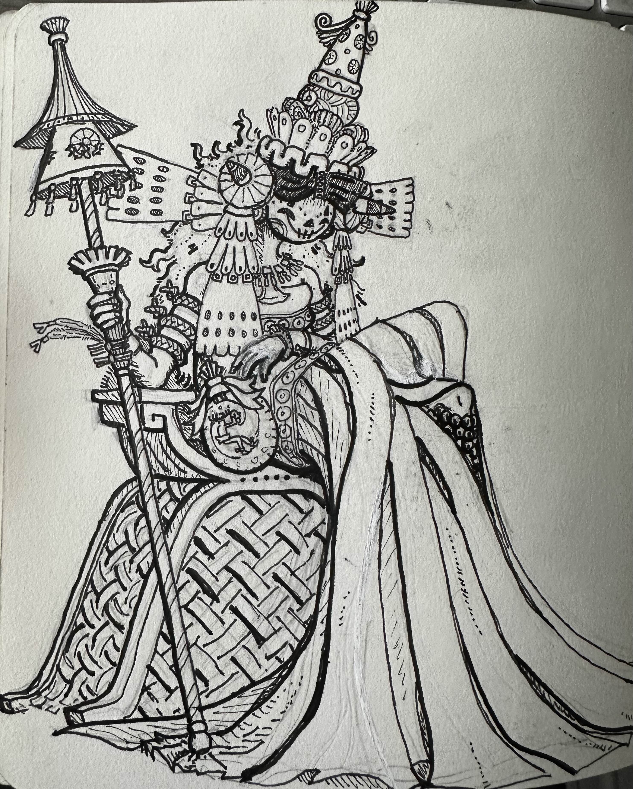
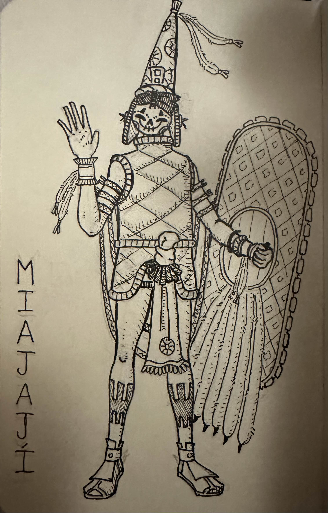

Click and drag to move the camera around or shift click to change her animations!
Note: If you are experiencing framerate issues toggle off details, randomized trees can also be turned on bellow for an even more detailed scenery!
Camera Angle: Camera Position:
Right arm angle x: Right arm angle y: Right arm angle z:
Right leg angle x: Right leg angle y: Right leg angle z:
Left arm angle x: Left arm angle y: Left arm angle z:
Left leg angle x: Left leg angle y: Left leg angle z:
Here is the reference I used for the model, it is a character I drew inspired by Aztec/Maya artwork. While I've always pictured this character in stark black and white monochrome robes, this would only look good in a detailed model so I decided to add different colors to the blocky version. Since the character's outfit was originally inspired by the Aztec rain god, Tlaloc, I drew inspiration from his palette when coloring my character.
 